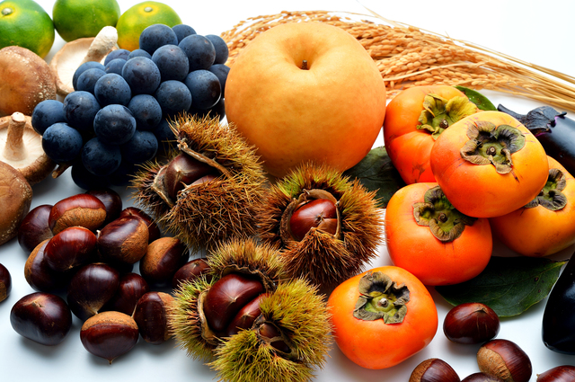

|
mumokuteki〈online〉cinema-「いきるをつくる」連続上映会 |
|---|---|
 |
cinema vol.10 すでに私たちはアートに生きていた 2020.02.17 |
 |
2020のスタート😋 笑顔いっぱいのお餅つき 2020.01.13 |
 |
mumokuteki マルシェ出張出店！JR京都伊勢丹「ワンダフルマルシェ」特設ブース 2020.01.12 |
 |
イベントレポート cinema vol.9 真の静寂とは？「自我」と「本質」を知り、自分に耳を澄ます。 2020.11.16 |
|  |
イベントレポート 実りの秋の食べ物と、冬支度と。marchevol.16 2019.10.26 |